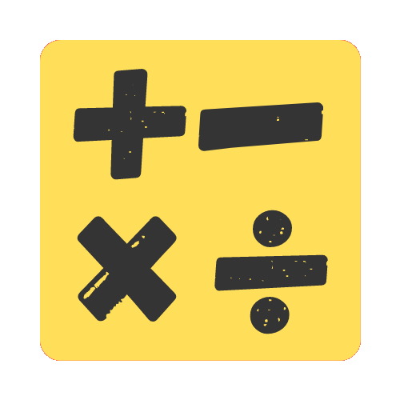

About
Yoo-Math is a simple math application with measurement converters and a beautiful design.
What it's made of
Yoo-Math is made with JavaScript, HTML, and CSS. Electron.js was used to turn it into an app.
Features
- Supports parentheses
- Supports any power
- Supports any root
- Convert all popular measurements
- Beautiful design and animations
- Keyboard shortcuts for everything
- Pin app to screen
- Dark and light mode based on system preferences
- Auto updating
Misc
—